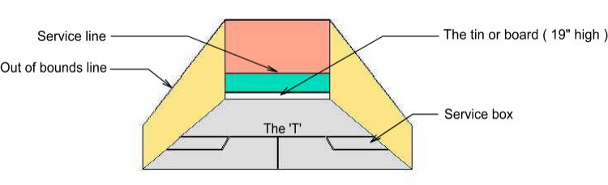
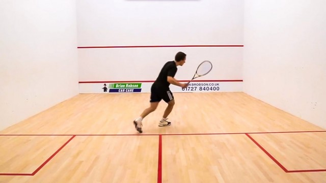

Tips
Winning Strategies
- At the start of a match, one player spins a racquet to decide who will serve first. The winner picks which service box to serve from.
- Each rally starts with a serve, and the players then return the ball alternately until the rally ends. The ball must hit the front wall but can hit the side and back walls as well.
- The opponent must hit the ball before the ball bounces twice (double bounce).
- Every time you win a rally, you get a point.
- A player can also select which box to serve from at the beginning of each game and after the ball has been handed over (hand out). If the same player wins the point, they must now serve from the alternate box.
- The first player to earn 11 points wins the game.
- The first player to earn 3 games wins the match.
- If there is a tie at 10-10 in a game, players must continue unti one player leads by two points.
- Check out this link for more info!

What You Can Do to Improve

- Practice
- Whether you're practicing alone or with your coach, repetition and discipline are how you get better! Drills are used to practice all of your skills, from serves to volleys! Another way to practice is by playing with other people. Ask some friends to get on court and play a few games with you! Remember: You only get out what you put in.
- Challenge Yourself!
- See how many shots you can hit against the wall in a row!
- Footwork
- Practice getting to the four corners and back to the T without a ball. This is called "ghosting". It will help prepare you for a match when you need to retrieve all of your opponent's shots while staying in a position to control the rally.